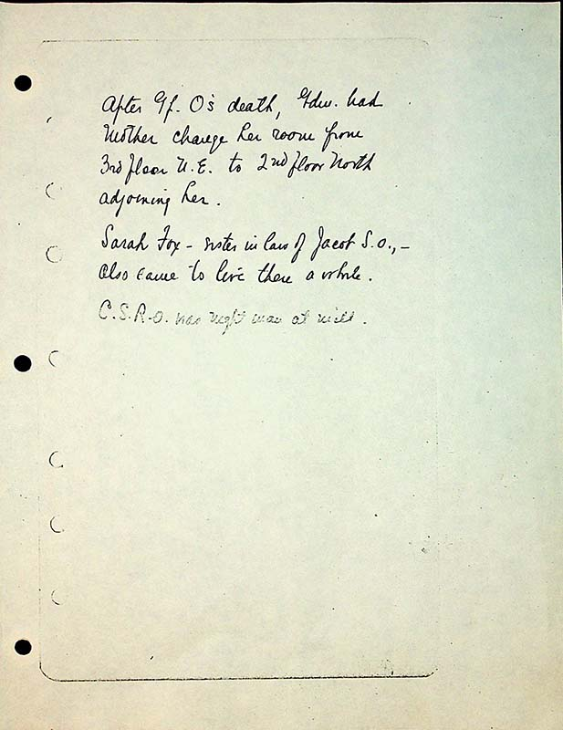

After Gf O’s death, Gdm had Mother change her room from 3rd floor N.E. to 2nd floor North adjoining her. Sarah Fox- sister in law of Jacob S.O., also came to live there a while.
C.S.R.O was night man at will.